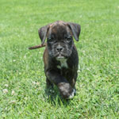

Kaya Jibaya von Bachbett, CGC, TKN

Jibaya was born to work. She is harder, more serious and ferocious than her 1/2 brother Indy and never backs down from anything, coming back more enthusiastically the more she is pushed. She learns quickly and especially loves Protection work. She is extremely active and full of energy, seeming to never tire. She loves long walks/runs in the woods around our farm and anywhere else, but sticks closer to me than Indy, enjoying interacting with me along the way more than exploring on her own. She is a very happy, healthy and beautiful girl who will produce outstanding working dogs.
Jibaya was born on June 19, 2021, has an OFA Normal heart, OFA Good hips, is DM and ARVC clear and has tested as homozygous brindle, meaning she has two copies of the brindle color allele so can only have brindle offspring. She weighs 70 pounds. She earned the Canine Good Citizen (CGC) title at only 5 months of age, also has a Trick Dog Novice (TKN) title and is currently in training for Agility and IPO.
Jibaya is a serious working dog, but still also a Boxer goofball. She gave birth to her first litter of three gorgeous, healthy brindle puppies, two males (blue and green collars) and one female (purple collar), on May 8, 2024, sired by Cliff vom Grand Kevin, Police K9, IPO2, DPO1, FH1. All puppies are reserved.
Planned breeding for Spring 2025: Kaya Jibaya von Bachbett, CGC, TKN, to Int. Ch. Boaz of Convenant Working Dogs, CSAU, DM. DMA, FN, HDJ, BCAT. Both flashy and plain brindles will be possible. More information on the "Litters" page.
- Cliff x Jibaya litter


- 8 weeks:

- 6 weeks (Copyright Cathy Hubert-Markos):


Trick Dog Novice title submission video, done after only 3 Agility training sessions: